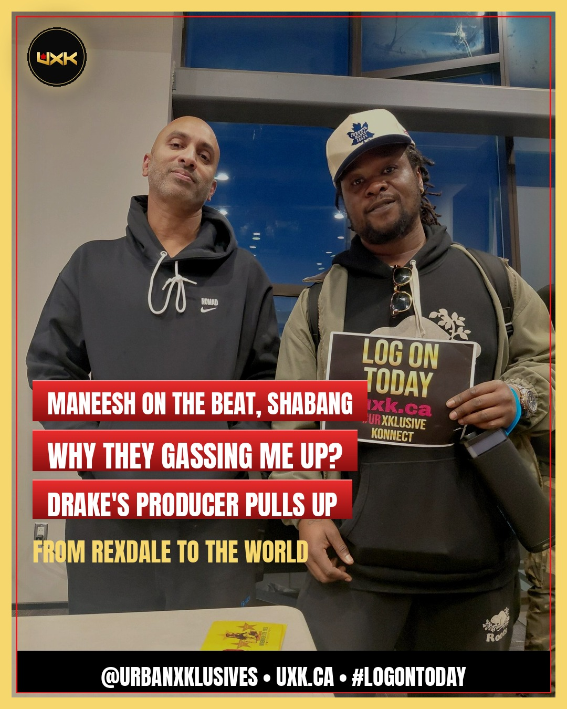
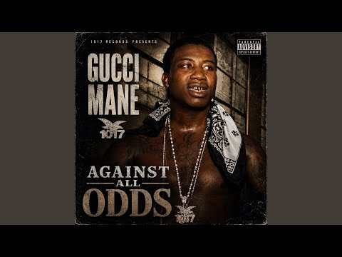
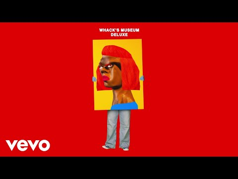
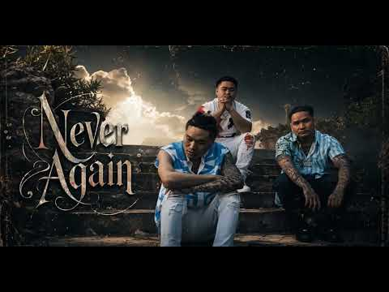
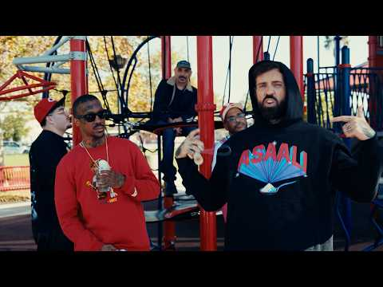
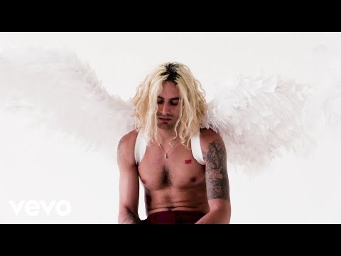

XKLUSIVE
THE UXK HEADLINER
The artist Trav has backed since 2015 — eleven years deep. St. Ann, Jamaica's own Broomy Boss: "Bad Youth" is the latest video, "Doom" with Popcaan is the biggest link-up of his career. Press play. This is the main entry.
NEW: BAD YOUTH · DOOM FT. POPCAAN · BAD DJ EP

$49 Limited Submission Drop

Worldstar & Q Live in Toronto

Believe In Us
UXK LIVE
CHECKING LIVE STATUS…CATCH ME LIVE
This is the main place you'll see me live online — streaming on Kick and on TikTok Live. Pull up, tap in, be part of the KONNECT in real time.
Search UrbanXklusives
LATEST POSTS
FROM THE BLOG →THE XKLUSIVE CIRCLE — MEMBERSHIP IS OPEN
OCT 19, 2026 · BY TRAV MANE
⭕ THE XKLUSIVE CIRCLE IS OPEN. Twenty-five dollars a month. Not a gig — a membership. You ride with us every month, we ride with you every month. That's the deal.
Here's what the Circle gets: 2 free content posts every month — your music, your announcements, your moments, posted for you. Monthly spotlight rotation on UrbanXklusives. Priority $50 submissions — skip the line, every time. Early access to drops, mixtapes, and tour presales before the public. The members-only briefing — what's moving, what's next, straight from Trav. And the community — artists, builders, warriors, all in one circle.
One tier. Twenty-five a month. Cancel anytime. We're building this the same way we built everything since 2008 — with the people, not above them.
🎟️ Founding members — the first 40 in the Circle get locked in as founders, forever. Forty members is the milestone. Be one of them.
⭕ JOIN THE XKLUSIVE CIRCLE — $25/MONTH
⭕ THE XKLUSIVE CIRCLE · $25/MONTH · THE $50 GIGS

MANEESH ON THE BEAT, SHABANG — TRAV WAS IN THE ROOM
OCT 19, 2026 · BY TRAV MANE
🎙️ "MANEESH ON THE BEAT, SHABANG — WHY THEY GASSING ME UP?" That viral tag from Drake's "Shabang" (ICEMAN, 2026) — the man behind it was IN THE BUILDING, and TRAV WAS THERE.
Maneesh Bidaye — Rexdale, Toronto's own, OVO Sound, GRAMMY-nominated producer — held down his "Cookin' Beats" session at IMSTA FESTA Toronto (Oct 17, 2026), 5 PM, Dream Room 219. From Rexdale to the world — that's the whole story right there. 🇨🇦
Maneesh has been connected to Drake's circle for years — credits across Views, "Charged Up," "What's Next," Travis Scott's "Maria I'm Drunk" — but "Shabang" put his name in the center of the conversation. For Toronto, for Rexdale, for every kid making beats in a basement: representation at the highest level. And UXK was in the room to witness it. 🤝
🎛️ MANEESH BIDAYE · "COOKIN' BEATS" · IMSTA FESTA TORONTO · OCT 17, 2026 · MANEESH'S LINKS

XKLUSIVE — "STRENGTH" — NEW TRACK OUT NOW
OCT 21, 2026 · BY TRAV MANE
🎙️ THE HEADLINER DELIVERS AGAIN. Xklusive — Broomy to the fans — just dropped "STRENGTH", and it's OUT NOW. Dancehall pressure, straight from Jamaica to the world. This is the sound that built his name — "Big Money Poppin" opened the door, "Bad Youth" kicked it down, and "Strength" plants the flag.
Xklusive isn't a guest on this platform — he's the headliner. The gold banner on this post is the mark: UXK XKLUSIVE ARTIST. When he moves, we move. Stream "Strength" everywhere, run the video up top, and watch this space — the Konnect era is loading. #LOGONTODAY
🎧 STREAM "STRENGTH" — ALL LINKS · AUDIOMACK · THE DROP — HIS IG
PROD. GUESSWAH PRODUCTIONZ × INTELIGNTZ MUSIQ

RAW HYPE DA MAJOR — "ONDA STOOP FREESTYLE" — WORLD PREMIERE
OCT 20, 2026 · BY TRAV MANE
🎙️ WORLD PREMIERE. Raw Hype Da Major steps onda stoop and goes straight in — no hook, no gimmicks, just bars. And he opens it with his own words: "Without UXK, there ain't no platform for TDG." That's not a feature. That's family.
This is an UR XKLUSIVE KONNECT VOL. 2 feature. Raw Hype runs through the tape — hear him on "Empire" with Bucksz FG when Vol. 2 drops. Reppin' Cakehead Clothing and #Cakeville every step. The gold banner on this post is the mark: UXK XKLUSIVE ARTIST — he works with us.
The full freestyle is live on the UrbanXklusives YouTube right now. Run it up. #LOGONTODAY

GUCCI MANE — "AGAINST ALL ODDS" — THE TRAP ORIGINATOR IS BACK
OCT 19, 2026 · BY TRAV MANE
🎙️ GUCCI MANE SITS AT THE TOP OF URBANXKLUSIVES — EXCLUSIVELY. Against All Odds dropped October 16, 2026 — 17 tracks, 52 minutes, via 1017 Global Music / Atlantic. Summer Walker on "Last Night In ATL." OJ da Juiceman on "Lambo Pass By." His son Ice Davis on "Priorities." And the boards? Zaytoven. Read that again.
Here's why this is personal. Zaytoven blessed this album — production on "Fucc Errybody," "She's So Fine," "Rich Ass N***a," "Priorities" — and Zaytoven shut down IMSTA FESTA with Trav in the room. Sean Paine is Gucci's engineer — and Sean Paine is family to us. We're working with everybody in his vicinity. So the originator goes where he belongs: the top of the site. Full album playlist above — run it up.
Two decades in, Gucci's still adding chapters to the catalog that shaped Atlanta trap — and shaped a generation of Toronto kids who grew up on it. Respect the architects. Brands that move with the culture move with us.
And Gucci — if you're reading this: audit the brand yourself. urbanxklusives.com. The door's open. 🙏
🎙️ GUCCI MANE · "AGAINST ALL ODDS" · 17 TRACKS · STREAM EVERYWHERE
- Back Against the Wall
- Yall Make Me Sick
- Fucc Errybody
- Last Night in ATL (feat. Summer Walker)
- STFU
- She's So Fine
- Still Dat Nigga
- She on GO
- Rich Ass Nigga
- Get the F Out My Face
- Crazy Bih
- Priorities (feat. Ice Davis)
- Lambo Pass By (feat. OJ da Juiceman)
- Drunk
- All I Have
- CRASH DUMMY
- 1017
18TH STUDIO ALBUM · 1017 GLOBAL MUSIC / ATLANTIC · PRODUCED BY ZAYTOVEN, J WHITE, FATBOI, GO GRIZZLY, JAMBO

A$AP ROCKY FINALLY DROPS 'SHROOM CLOUDS' FT. reggie & JEREMIH
OCT 19, 2026 · BY TRAV MANE
After four years of teasing, A$AP Rocky finally put "Shroom Clouds" on streaming October 16. Fans know it as "Mushroom Clouds" — the cut he was performing on stage back in 2021 and 2022, from Governors Ball to his Amazon Live Music show. The official version comes with reggie and Jeremih on the vocals and production from Hector Delgado.
This one's the lead single for Don't Be Dumb (Disc 2), the expanded edition of the album that debuted at No. 1 on the Billboard 200 back in January. Disc 2 gathers the loose ends from the long stretch between studio albums — "Babushka Boi," "Sundress," "Trunks," "Grim Freestyle," "Hijack" — some of them with updated verses.
Rocky told the press the music video took years because he wouldn't release it until the visuals matched his standard. Respect to that. When a song sits in the vault for four years and still sounds fresh, it earned the wait. Press play.
🎵 VIA DANCEHALLMAG (OCT 17, 2026) · WATCH ON YOUTUBE

TIERRA WHACK UNLEASHES 'SCARECROW' ON WHACK'S MUSEUM (DELUXE)
OCT 19, 2026 · BY TRAV MANE
"SCARECROW" is one of seven new songs on WHACK'S MUSEUM (DELUXE), out now. Tierra Whack dropped the original mixtape back in June — 12 songs, zero features — and the deluxe adds "Liar Liar," "Bet Her," "Recognition," "Strawberry," "Question Mark," "Pay Day" and this one.
Conductor Williams is back on the boards for several of the new joints, and "SCARECROW" rides one of the hardest uptempo beats on the whole project. Whack raps like a fashion assassin over it — cemetery talk, designer talk, grief and swagger in the same breath.
She's fresh off sharing the stage with Tems at the 2026 BET Awards for the Fugees tribute to Ms. Lauryn Hill. Nobody in the game packages weirdness this well. The museum's open — go walk through it.
🎵 VIA CONSEQUENCE (OCT 16, 2026) · WATCH ON YOUTUBE

CARDI B CALLS HER SHOT ON 'DON'T CHART' — GTA VI SINGLE
OCT 19, 2026 · BY TRAV MANE
Cardi B's "Don't Chart" is out now off Grand Theft Auto VI: The Album — and the title's a dare. "I can name this song 'Don't Chart,' it's gon' chart," she says on the record. Vinylz on the beat, Pardison Fontaine on the pen. Classic Cardi talk-over-a-bounce mode.
The song dropped October 8 as part of Rockstar's rollout for the game and the 34-track soundtrack album, both landing November 19. It's her second single of 2026 after "AH HA" — and she's been everywhere this year off the $70 million-grossing Little Miss Drama Tour.
Real talk: this lands right after Cardi pulled out of her first-ever Jamaica stadium show at BZR WKND in Kingston — announced October 8, ten days before showtime. She blamed unfinished arrangements and said her team heard 18,000 tickets were sold. Jamaica still waits, but GTA VI don't. Press play.
🎵 VIA STEREOGUM / GTA VICE (OCT 2026) · WATCH ON YOUTUBE

LUCKY DAYE GOES 'ALOUD!' — NEW ALBUM FT. PUSHA T, LEON THOMAS, MUNI LONG
OCT 19, 2026 · BY TRAV MANE
Lucky Daye's ALOUD! is out now — 15 tracks on Warner Records, his first album since leaving RCA. The title's the whole mission: the tension between "allowed" and "aloud." He built it after a sabbatical in Brazil, and said it himself: "I used to think I wasn't allowed to do what I wanted. Now I'm screaming."
The features are serious. Pusha T slides onto "Mouf Say" — the official video embedded above — Leon Thomas duets on "Fly U Out," Muni Long and The Paradox crash "Knockin," plus Akeem Ali. D'Mile held down the production.
Two Grammys and 13 nominations in, Lucky keeps finding new pockets without losing the smooth. "Nowhere Fast" already cracked the R&B radio Top 10. Run the whole album, then run it back.
🎵 VIA THE SOURCE (OCT 16, 2026) · WATCH ON YOUTUBE

DJ AGILE X LEILA DEY — 'OFF TOP' (FROM A NETFLIX CUE TO A FULL RECORD)
OCT 19, 2026 · BY TRAV MANE
Toronto's own DJ Agile links with Leila Dey on "Off Top," out now via Foundation Media. This one took the scenic route — the beat started as a background cue on Netflix's Hip-Hop Evolution, in the "Dirty South" episode. After it aired, Agile was getting two to four messages a week from people asking about that music.
He shelved the demo for years, reopened it in January 2025, rewrote the verse with Dahlia Fernandes and brought in Mark James on keys. The missing piece was the voice — Kardinal Offishall heard it and said one name: Leila Dey. Agile knew her from the BrassMunk days through the late King Reign. Her vocals sealed it.
ATL bass meets Toronto R&B. Agile's résumé already reads Nas, Melanie Fiona and Glenn Lewis — now add one of the most patient rollouts in Toronto history paying off. Turn it up.
🎵 VIA HIPHOPCANADA (OCT 2026) · WATCH ON YOUTUBE

A 2018 DEMO JUST HIT NO. 1 ON GLOBAL SPOTIFY — DOMINIC FIKE 'BABYDOLL'
OCT 19, 2026 · BY TRAV MANE
Let this sink in: a demo Dominic Fike recorded in 2018 — on house arrest in a Florida room — is sitting at No. 1 on the global Spotify chart. "Babydoll," from his Don't Forget About Me, Demos EP, blew back up this year off a wave of TikTok covers and remixes. Columbia re-released it as a single in February and it never looked back.
Eight years after he wrote it, it's his first-ever global No. 1, past a billion streams and sitting on the Billboard Hot 100. The lesson: a real song has no expiration date. The algorithm just found what was already there.
Fike's third album How To Quit Smoking drops October 30, with "Wallflower" and "Small Town" already out. But this one? This is the one the people resurrected. Respect the demo.
🎵 VIA WHATLISTEN (OCT 2026) · WATCH ON YOUTUBE
DIGGA FLIPS A BEEF INTO A DANCEHALL SMASH — 'GIRLS ALL AROUND THE WORLD'
OCT 19, 2026 · BY TRAV MANE
Digga flipped a beef into a dancehall smash. After Morrison sent disses mocking him for leaning into dancehall, Digga answered with "Girls All Around The World" — a King Jammy "I Know The Score" riddim flip produced by OhNine and ProdBy6aby, with the video directed by AN Films. Strategy, not anger.
The previews went viral before the drop, and now it's officially charting: No. 11 on the UK Official Trending Chart and a fresh debut on the Official Singles Chart at No. 61. That's what happens when the counter-move's better than the diss.
Digga's been building this lane — Masicka, Malie Donn, Skillibeng, Vybz Kartel collabs — and this one's for the ladies. Out now. Watch the official video above.
🎵 VIA 13TH STREET PROMOTIONS / OFFICIAL CHARTS (OCT 2026) · WATCH ON YOUTUBE

CHASE & STATUS LINK LITTLE SIMZ FOR 'CARNAGE' — GENERIC EVERYTHING OUT NOW
OCT 19, 2026 · BY TRAV MANE
"Carnage" — Chase & Status with Little Simz — is off their new album Generic Everything, out October 9. Simz floats over the chaos with that controlled pen: designer talk, tint talk, then straight business. A heavyweight link-up.
The album's a 10-track statement against sounding like everybody else — J Hus and IRAH, Skrillex, Giggs, D Double E, Blanco and Col3trane all on it. The duo call it resisting "the cube": the pressure to squeeze every idea into the same shape. "Carnage" debuted on the UK charts this week.
Twenty-plus years in and C&S still refuse to sit still. A UK/EU arena tour is already announced for 2027. Play it loud — this one's built for volume.
🎵 VIA OFFICIAL CHARTS / EDMIDENTITY (OCT 2026) · WATCH ON YOUTUBE

STAR2 — FROM A THAI REFUGEE CAMP TO 500K TIKTOK VIDEOS: '20-SOMETHING' OUT NOW
OCT 19, 2026 · BY TRAV MANE
Star2's story is the underdog blueprint. Born in a Thai refugee camp, he fled with his grandmother to San Diego at six years old and built himself into a movement from nothing. Now his new concept album 20-Something (In Love) is here — his most personal project yet, with Young Henny, Chinatown Runner, Ler Mu Dex, Lil BK and Seko riding along.
The numbers did the talking first: "M.O.B." sparked a 500K-video TikTok wave, and the "Never Again" visualizer — embedded above — ran past 1.2 million views on YouTube. Melodic trap meets West Coast R&B, heart-on-sleeve the whole way.
Five albums, four EPs, collabs with Soulja Boy, Mozzy and $tupid Young — and he started with less than nothing. That's why UrbanXklusives exists: stories like this. Stream the album.
🎵 VIA ALLHIPHOP / NUMAINSTREAM (OCT 2026) · WATCH ON YOUTUBE

STRAFFITTI X OCTOBERSRICH — 'WINDOW' (NIGERIAN TRAP GOING VIRAL)
OCT 19, 2026 · BY TRAV MANE
Nigeria's underground keeps feeding the world. Straffitti tapped rising trap artist Octobersrich for "WINDOW" — a Gqom-meets-street-trap record with the viral teaser line "Wetin u dey think tho" already doing damage online.
Produced by YoStereo, Jxses, Gcl3f and Big Fish, mixed by Straffitti himself, mastered by Ewoma — with the visualizer from USAD and Xanderthegreat. Octobersrich is one of the rawest voices bubbling out of the Naija underground: gritty anthems, Pidgin catchphrases, raw and unconventional.
Straffitti's whole mission is bridging the underground to the wider culture, and this one's doing exactly that. Watch the visualizer.
🎵 VIA HYPE MAGAZINE (OCT 15, 2026) · WATCH ON YOUTUBE

THE NO JUMPER CYPHER 2026 — LIVE FROM OUR HOOD
OCT 19, 2026 · BY TRAV MANE
The No Jumper Cypher 2026 is live — "Live From Our Hood." No Jumper's annual cypher is one of the last real bar-for-bar proving grounds left, and this year's edition is streaming now on their channel.
Cyphers matter. No hooks, no features to hide behind — just mics and pressure. Whether you're a fan or an artist watching the tape, study these: somebody in every cypher leaves with a bigger name than they came in with.
Watch the full cypher above and tell us who bodied it. Drop your pick in the comments.
🎵 VIA NO JUMPER (YOUTUBE) · WATCH ON YOUTUBE
UNDERGROUND FRIDAY: FREDO BANG, TINIE TEMPAH, Z-RO, KILLAH PRIEST
OCT 19, 2026 · BY TRAV MANE
New Music Friday came heavy. Fredo Bang dropped Laugh Now Cry Later on October 16 — Bang Biz/EMPIRE — and "Fck U," the official visualizer embedded above, is one of the standouts. Fredo don't take seasons off.
London's back outside too: Tinie Tempah's The Night's Not Dead is out — his first album in nine years, built across three EPs (9PM, 12AM, 3AM) that soundtrack a whole night out. And Houston's own Z-Ro added Forever King to a catalog that never sleeps.
And respect to Killah Priest, who took his own route entirely — Swift As Light 2 is Bandcamp-only, 14 tracks, no streaming games. When the music's the point, the platform's a choice. Which one you running first?
🎵 VIA HITSCULTURE (OCT 16, 2026) · WATCH ON YOUTUBE

R&B CHECK-IN: SNOH AALEGRA'S 'KARMA,' B2K'S 'LIL FREAK,' TANK MAKES HISTORY
OCT 19, 2026 · BY TRAV MANE
R&B had a week. Snoh Aalegra ended a three-year silence with "Karma" — produced by Josh Grant, co-written with Joel Compass — a slow-burning meditation on a connection sixteen past lives deep. She teased it with a karmic-healer story and delivered one of the year's smoothest returns. Press play above.
B2K are officially back too: new single "Lil Freak" is out and their first album in 23 years, ECLIPSE, lands November 6 on BPC Music Group. "Mileage" started it in July; "Lil Freak" keeps the pressure on.
History got made too — Tank's "YES" became his 12th No. 1 on Billboard's Adult R&B Airplay, the most ever by a man in the chart's 33 years. And SZA's SOS just logged its 200th week on the Top R&B Albums chart, 135 of them at No. 1. Respect the longevity.
🎵 VIA SOUNDRNB (OCT 18, 2026) · WATCH ON YOUTUBE

TORONTO UNDERGROUND WATCH: EAZY FINESSE X PARIS RICHARDS 'SHADE ROOM'
OCT 19, 2026 · BY TRAV MANE
Toronto underground check. Eazy Finesse and Paris Richards dropped the official video for "Shade Room" — produced by Tekika and Eazy Finesse herself, directed by @chapter.6ixx. Eazy's been one of the city's most consistent pens since the freestyle days, and Paris matches her bar for bar.
The city's deeper than the headliners. Two more names floating around our IG radar right now: @_klee013 with "If I Was A Trillionaire" and @trapsound_kyler_ with "Nobody." Still early — but that's exactly when you're supposed to find them.
This is what the $50 submission spirit is about — the underground feeds the mainstream, not the other way around. Toronto, we see you. Keep submitting.
🎵 VIA YOUTUBE (OFFICIAL VIDEO) · WATCH ON YOUTUBE

JESSIE REYEZ COMES HOME — A LITTLE VENGEANCE TOUR FINALE AT THE COLISEUM
OCT 19, 2026 · BY TRAV MANE
Jessie Reyez is closing out her biggest headlining tour ever in her own backyard — Tuesday, Nov 24, Coca-Cola Coliseum, Toronto. Thirteen dates across North America, from Seattle to Brooklyn, and the last one is home. That's not an accident.
She's coming off being named for SOCAN's International Achievement Award — handed out Oct 26 at REBEL — for representing Canada on the global stage: 4 billion streams, Grammy nominee, multiple Juno winner, worked with Beyoncé, Dua Lipa, Eminem. This isn't a comeback. This is a coronation.
And she's moving like we move — a piece of every tour ticket goes to the Jessie Reyez Fund, opening doors for women and underrepresented people in the music industry. That's real community work, not a hashtag. Toronto, be in the building Nov 24.
🎵 TICKETS — TICKETMASTER · WATCH ON YOUTUBE

KWN BRINGS "WN NIGHT ONLY" TO HISTORY — OCT 29
OCT 19, 2026 · BY TRAV MANE
East London's kwn (say it "kay-wuhn") touches Toronto Thursday, Oct 29 at HISTORY for "wn night only" — a one-night-only headline show. Toronto gets her while it's still a room and not an arena. Pay attention.
Her "worst behaviour" remix with Kehlani did 20 million-plus views and had the whole internet talking. She made the original in her own bedroom studio, got dropped by a label, and still ran the table — Billboard R&B Rookie of the Month, MOBO and BET nominations, signed to RCA, and a sold-out first headline tour.
Toronto is an R&B city whether the industry wants to admit it or not. This is the show you tell people you were at before the rest of the world caught on. Tickets via Ticketmaster — move fast.
🎵 TICKETS — TICKETMASTER · WATCH ON YOUTUBE

ALLAN RAYMAN — HOTEL ALLAN 10-YEAR ANNIVERSARY, TWO NIGHTS AT THE DRAKE UNDERGROUND
OCT 19, 2026 · BY TRAV MANE
Allan Rayman is doing two nights — Nov 24 and 25 — at the Drake Hotel Underground to celebrate 10 years of Hotel Allan, the project that started it all. Same city he's based in. Intimate room. Anniversary energy. You do the math.
Wyoming-born, Toronto-based, 250 million streams, doesn't do interviews — lets the music talk. Sold-out tours across the US, Europe, and Canada, and festival stages from Bonnaroo to Lollapalooza to Reading. One of the most original voices this country has produced.
Two nights at the Underground is a small room for an artist this size, which means it won't stay available long. If you slept on him in 2016, don't sleep twice.
🎵 TICKETS — TICKETMASTER · WATCH ON YOUTUBE
DRAKE — FIFTH STRAIGHT SOCAN SONGWRITER OF THE YEAR, AND STILL NOT SUBMITTING TO THE GRAMMYS
OCT 19, 2026 · BY TRAV MANE
Drake picks up his fifth straight SOCAN Songwriter of the Year (performer) on Oct 26 at REBEL Toronto. Five in a row. Hosted by Andrew Phung and Arisa Cox, 100-plus creators honoured — and the boy from Toronto sits at the top of the list again. Nobody's touching that pen.
Same month, Billboard confirmed he's sitting out the 2027 Grammys — no Iceman, no Maid of Honour, no Habibti submitted. He already told us on "Make Them Know": "This album, I'm never submittin' it." Said it, then did it. That's standing on business.
Awards or no awards, the numbers are the numbers — the May triple drop took the top three Billboard 200 spots in one week, something nobody had ever done. Toronto's own, five years running at SOCAN. Put some respect on it.
🎵 SOCAN 2026 ANNOUNCEMENT · WATCH ON YOUTUBE

MAVADO & FRIENDS — MASICKA ANNOUNCED, AND SKIP2FAME IS GIVING AWAY TICKETS
OCT 19, 2026 · BY TRAV MANE
Nov 5, Scotiabank Arena — Mavado & Friends Live. The Gully Gad's first Toronto show in nine years and his first time on a Canadian stage since 2017. A dancehall artist headlining the same building the Raptors play is not normal — that's history.
And now the lineup got even heavier — Masicka announced as a special guest, alongside Armanii on the bill. That's a dancehall night you don't get twice in one city.
Our own Skip2Fame — Don Londres, S2F Music Group — is the promoter behind this, same man who put Davido and Sexyy Red on Canadian stages. And he's running a ticket giveaway — watch @skip2fame for how to enter. This is what supporting your own looks like. #SCORPIONPARADISE2026
🎵 KABOOM MAG — MAVADO'S TORONTO RETURN · WATCH ON YOUTUBE

REVIVAL'S HALLOWEEN WEEK — MADHAUS FREAK SHOW OCT 30 ($25) + HIP-HOP KARAOKE NOV 6 ($20)
OCT 19, 2026 · BY TRAV MANE
Revival Event Venue (783 College St) is running Halloween week for the hip-hop heads. Fri Oct 30 — Madhaus Freak Show Halloween, 10pm–3am, $25. Then Fri Nov 6 — Hip-Hop Karaoke returns, 9:30pm–2:30am, $20 — and on that night, YOU are the show.
Hip-Hop Karaoke Toronto is an institution — Abdominal and More Or Les holding it down, hundreds of rap classics on deck, live-stage energy, you on the mic. If you've never grabbed that mic, Nov 6 is your night. Round two at Revival.
Halloween week in Toronto gets expensive fast. $25 and $20 for real nights out with real music? That's the people's price. Costume up, pull up.
🎵 REVIVAL — EVENT CALENDAR · WATCH ON YOUTUBE
Get drops, vlogs, and exclusives first. One email when it drops — no spam, ever.
SIMILAR STORIES
- BANDLAB SPOTLIGHT: YOUR BEDROOM COULD BE NEXTpromo
- DRAKE OWNS BILLBOARD — 18 NO. 1 R&B/HIP-HOP ALBUMS, MOST EVERstories
- "HATE SLEEPING ALONE" FINALLY LANDS ON SPOTIFY — 15 YEARS AFTER TAKE CAREmusic
- LUCKI — "LAST LAUGH" ARCHIVAL PROJECTmixtapes
- JESSIE REYEZ TAKES TORONTO ON THE ROAD — FULL CITY CREW ON "A LITTLE VENGEANCE"events
- SNEAKER HEAT: THE FALL 2026 ROTATIONpromo